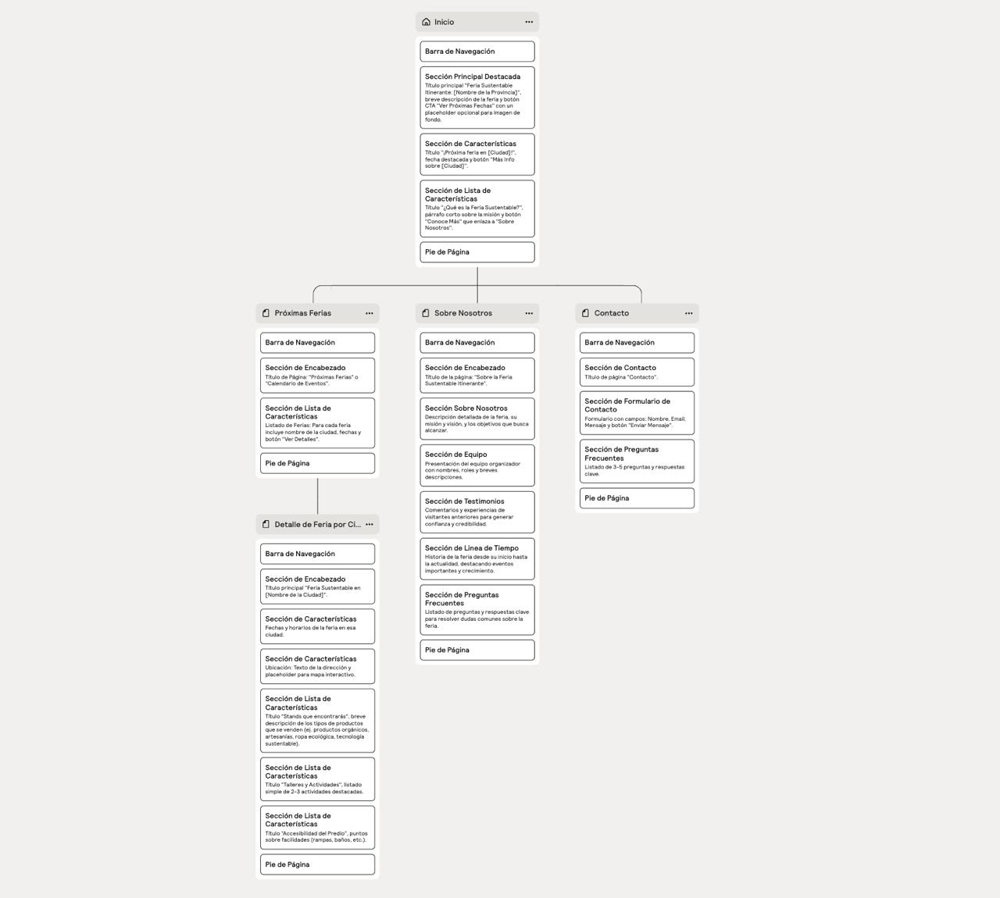

Avances del Proyecto - Feria Sustentable Itinerante
Documentación completa del proceso de desarrollo del sitio web para la organización de ferias sustentables.
Texto Introductorio - Caso Asignado y Propuesta
Actividad Principal de la Organización
La organización se dedica a promover la sustentabilidad mediante la organización de ferias itinerantes que recorren diferentes ciudades de la Provincia de Buenos Aires. Estas ferias tienen como objetivo acercar productos ecológicos, alimentos orgánicos, artesanías sustentables y tecnologías verdes a familias, jóvenes y personas interesadas en prácticas sustentables.
Objetivos del Sitio Web
- Atraer Visitantes: Proveer información completa y atractiva para motivar la visita a la feria
- Facilitar la Compra: Ofrecer un proceso de compra sencillo y seguro para productos y actividades
- Promover la Inclusión: Asegurar que el sitio sea accesible para todos los usuarios
- Mejorar la Experiencia: Proveer una navegación fluida y recursos útiles para los visitantes
- Educar: Promover prácticas ecológicas y conciencia ambiental
Concepto General y Estrategias de Atracción
El sitio web adopta un diseño natural y ecológico que refleja la temática sustentable de la feria. Las estrategias incluyen:
- Información clara sobre fechas, ubicaciones y horarios de las ferias
- Descripción detallada de productos y expositores
- Actividades interactivas para niños y jóvenes
- Sistema de promociones y descuentos
- Formularios de contacto
- Mapa interactivo de ubicaciones
Análisis del Público Objetivo
Familias
Edad: Padres de 25-45 años con hijos pequeños y adolescentes
Intereses: Productos orgánicos, educación ambiental para niños, actividades familiares
Hábitos: Compras conscientes, búsqueda de productos saludables, uso de redes sociales
Jóvenes
Edad: 18-35 años, grupos de amigos y parejas jóvenes
Intereses: Moda sustentable, tecnología verde, experiencias nuevas
Hábitos: Navegación móvil, compras online, influenciados por tendencias ecológicas
Personas Eco-conscientes
Edad: Todas las edades (principalmente 30-60 años)
Intereses: Productos artesanales, agricultura orgánica, reducción de huella de carbono
Hábitos: Investigación previa a compras, valoración de certificaciones, compromiso ambiental
Identidad Visual Inicial
Paleta de Colores
Inspirada en colores tierra y naturaleza que reflejan la temática sustentable:
Tipografía
- Principal: Poppins (Google Fonts) - Moderna, legible y amigable
- Pesos utilizados: 400 (regular), 500 (medium), 600 (semi-bold)
- Aplicación: Títulos, párrafos y elementos de navegación
Estilo Gráfico e Íconos
- Diseño minimalista y orgánico
- Bordes redondeados para suavidad visual
- Uso mínimo de íconos, priorizando texto claro
- Gradientes suaves entre colores principales
- Espaciado generoso para mejor legibilidad
Logo

Versión actual: Logo provisional que representa la temática ecológica
Características: Diseño simple, colores naturales, fácil reconocimiento
Mapa del Sitio
Estructura General del Sitio Web
Secciones y Funcionalidades Previstas
Página Principal
- Información general de la feria
- Misión y visión
- Público objetivo
Calendario
- Fechas y ubicaciones
- Horarios detallados
- Mapa interactivo
Stands y Productos
- Categorías de productos
- Información de expositores
- Catálogo detallado
Actividades
- Talleres y charlas
- Actividades para niños
- Demostraciones en vivo
Contacto
- Formulario de contacto
- FAQ
Prototipo
Wireframes de Páginas Principales
Hemos desarrollado wireframes completos para desktop y móvil que incluyen todas las páginas principales del sitio web. Los prototipos fueron diseñados siguiendo principios de UX/UI y accesibilidad.
Características del Prototipo
- Versiones para desktop (1920px) y móvil (375px)
- Navegación interactiva entre páginas
- Componentes reutilizables
- Sistema de colores y tipografías definido
- Layouts responsivos
- Estados de hover y focus para accesibilidad
Organización del Equipo
Roles y Responsabilidades
Devita Martin Jose
UX/UI Designer
Tareas Realizadas:
- Diseño de wireframes y prototipos en Figma
- Definición de la paleta de colores y tipografía
- Creación del mapa del sitio
- Análisis de experiencia de usuario
- Aplicación de principios de Gestalt y accesibilidad
- Diseño responsive para múltiples dispositivos
Monaco Ezequiel
Maquetador Web
Tareas Realizadas:
- Estructuración semántica del HTML5
- Implementación de estilos CSS3
- Desarrollo del sistema de grids responsivos
- Optimización de CSS para rendimiento
- Implementación de animaciones y transiciones
- Asegurar compatibilidad cross-browser
Vega Lucas
Programador Frontend
Tareas Realizadas:
- Desarrollo de funcionalidades en JavaScript
- Implementación de validaciones de formularios
- Navegación suave entre secciones
- Funcionalidades interactivas (chat, promociones)
- Optimización para Lighthouse
- Implementación de principios de accesibilidad web
Villarreal Lucas Nehuen
Comunicador Web
Tareas Realizadas:
- Redacción y curación de contenido
- Estrategia de comunicación digital
- Análisis del público objetivo
- Copywriting para diferentes secciones
- Revisión ortográfica y gramatical
- Optimización de contenido para SEO
Metodología de Trabajo
- Herramientas utilizadas: Figma, Git, Visual Studio Code, Discord
- Flujo de trabajo: Diseño → Maquetado → Programación → Contenido → Testing
- Reuniones: Semanales para seguimiento de avances y resolución de problemas
- Versionado: Control de versiones con Git para colaboración efectiva
- Testing: Pruebas en múltiples dispositivos y navegadores